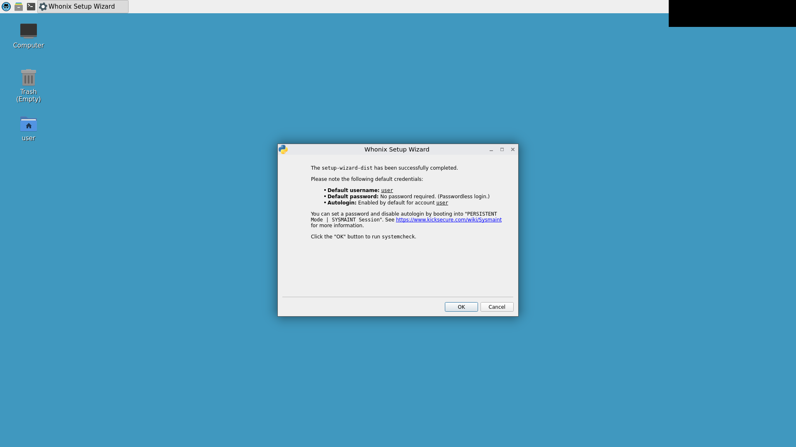
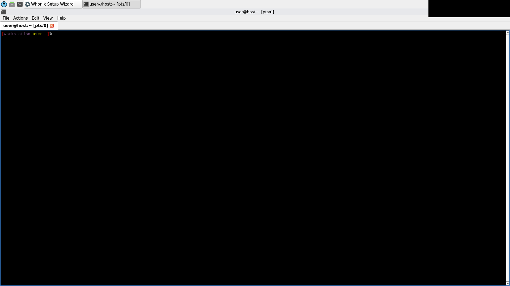

whonix-func fail
exit 5
dm-whonix-pair: [functional] boot Gateway (Whonix-Gateway-LXQt)
dm-whonix-pair: [functional] boot Workstation (Whonix-Workstation-LXQt) into the user session
dm-whonix-pair: [functional] wait for Tor egress (systemcheck SocksPort + TransPort)
tr: write error: Broken pipe
[INFO] [systemcheck] SocksPort IP Leak Test: Testing Tor's SocksPort (SOCKS_PORT_SYSTEMCHECK: 9110)...
[INFO] [systemcheck] SocksPort IP Leak Test: Connected to Tor.
[INFO] [systemcheck] system default networking IP Leak Test: system default networking IP Leak Test...
[INFO] [systemcheck] system default networking IP Leak Test: Connected to Tor.
dm-whonix-pair: [functional] reach an input-ready terminal in the WS user session
dm-whonix-pair: [functional] run the release-check battery in the Workstation
dm-whonix-pair: check 1 PASS
dm-whonix-pair: check 5 PASS
dm-whonix-pair: check 6 PASS
dm-whonix-pair: check 4 PASS
dm-whonix-pair: check 8 FAIL (rc=1)
dm-whonix-pair: check 8 (systemcheck) FAILED
dm-whonix-pair: command: systemcheck --cli --ci
dm-whonix-pair: exit: 1
dm-whonix-pair: check 8 output (why it failed):
systemcheck unknown option: --ci
dm-whonix-pair: check 8 (systemcheck) not clean yet (attempt 1); retrying
dm-whonix-pair: check 8 FAIL (rc=1)
dm-whonix-pair: check 8 (systemcheck) FAILED
dm-whonix-pair: command: systemcheck --cli --ci
dm-whonix-pair: exit: 1
dm-whonix-pair: check 8 output (why it failed):
systemcheck unknown option: --ci
dm-whonix-pair: check 8 (systemcheck) not clean yet (attempt 2); retrying
dm-whonix-pair: check 8 FAIL (rc=1)
dm-whonix-pair: check 8 (systemcheck) FAILED
dm-whonix-pair: command: systemcheck --cli --ci
dm-whonix-pair: exit: 1
dm-whonix-pair: check 8 output (why it failed):
systemcheck unknown option: --ci
dm-whonix-pair: ERROR: release check 8 (systemcheck (functional, rc=1)) FAILED
check 8 (systemcheck) FAILED:
command: systemcheck --cli --ci
exit: 1
output:
systemcheck unknown option: --ci
pair-defined
[state card -- rendered text, not a screenshot]
Whonix pair under test (pre-boot)
Gateway VM: Whonix-Gateway-LXQt
memory=1280
vram=128
firmware="BIOS"
VMState="poweroff"
nic1="nat"
Workstation VM: Whonix-Workstation-LXQt
memory=2048
vram=128
firmware="BIOS"
VMState="poweroff"
nic1="intnet"
fail content: UNVALIDATED (no golden) gateway-booted
fail content: UNVALIDATED (no golden) workstation-booted

gateway-tor-bootstrap
[state card -- rendered text, not a screenshot]
Gateway Tor bootstrapped
Workstation systemcheck confirmed the Gateway's Tor SocksPort + TransPort are up (positive control). The egress path Workstation -> Gateway -> Tor is live; the battery runs only now.
fail content: UNVALIDATED (no golden) workstation-tor-confirmed

fail content: UNVALIDATED (no golden) workstation-terminal

check1-user-session-boot (post-boot checks)
[state card -- rendered text, not a screenshot]
Release check 1: user session boot (pass)
PASS
check5-CLI-login (post-boot checks)
[state card -- rendered text, not a screenshot]
Release check 5: CLI login (pass)
PASS
check6-GUI-login (post-boot checks)
[state card -- rendered text, not a screenshot]
Release check 6: GUI login (pass)
PASS
check4-networking (post-boot checks)
[state card -- rendered text, not a screenshot]
Release check 4: networking (pass)
PASS
check8-systemcheck (post-boot checks)
[state card -- rendered text, not a screenshot]
Release check 8: systemcheck (fail)
FAILED -- see the verdict/failure card for the reason
pair-poweroff
[state card -- rendered text, not a screenshot]
Pair teardown (final VM states below)
Gateway Whonix-Gateway-LXQt: poweroff
Workstation Whonix-Workstation-LXQt: poweroff
failure
[state card -- rendered text, not a screenshot]
Run failed (rc=5)
release check 8 (systemcheck (functional, rc=1)) FAILED